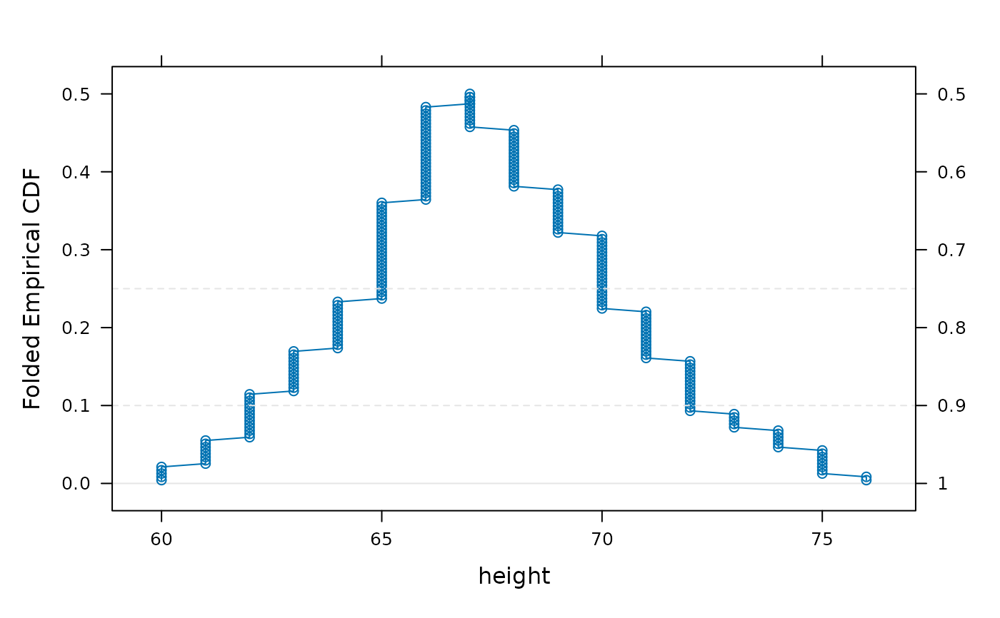
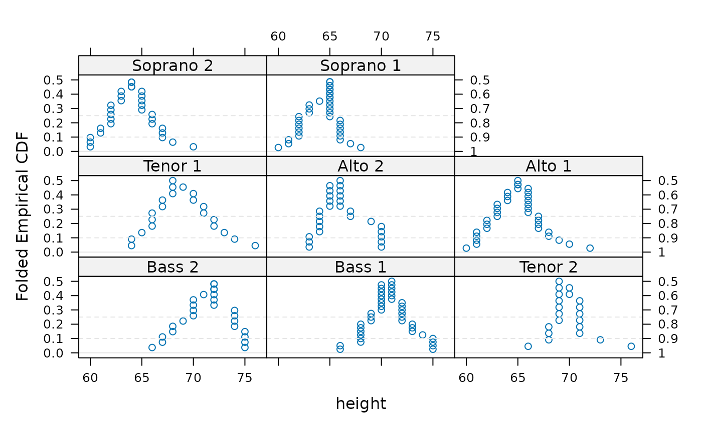
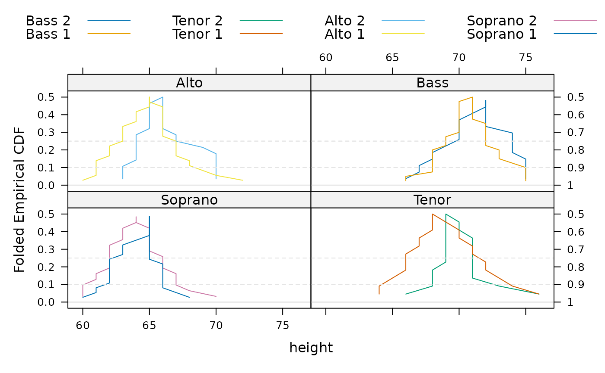

A mountain plot is similar to an empirical CDF, but _decreases_ from .5 down to 1, using a separate scale on the right axis.
Usage
mountainplot(x, data, ...)
mountainplotyscale.components(...)
# S3 method for class 'formula'
mountainplot(
x,
data = NULL,
prepanel = "prepanel.mountainplot",
panel = "panel.mountainplot",
ylab = gettext("Folded Empirical CDF"),
yscale.components = mountainplotyscale.components,
scales = list(y = list(alternating = 3)),
...
)
# S3 method for class 'numeric'
mountainplot(x, data = NULL, xlab = deparse(substitute(x)), ...)Arguments
- x
Variable in the data.frame 'data'.
- data
A data frame
- ...
Other arguments
- prepanel
The prepanel function. Default "prepanel.mountainplot".
- panel
The panel function. Default "panel.mountainplot".
- ylab
Vertical axis label.
- yscale.components
Function for drawing left and right side axes.
- scales
The "scales" argument used by lattice functions.
- xlab
Horizontal axis label.
Details
Note that `mountainplotyscale.components` is not intended to be called by the user, but is used by lattice to configure the right-axis ticks and labels.
References
K. L. Monti. (1995). Folded empirical distribution function curves-mountain plots. The American Statistician, 49, 342-345. http://www.jstor.org/stable/2684570
Xue, J. H., & Titterington, D. M. (2011). The p-folded cumulative distribution function and the mean absolute deviation from the p-quantile. Statistics & Probability Letters, 81, 1179-1182. https://doi.org/10.1016/j.spl.2011.03.014
Examples
data(singer, package = "lattice")
singer <- within(singer, {
section <- voice.part
section <- gsub(" 1", "", section)
section <- gsub(" 2", "", section)
section <- factor(section)
})
mountainplot(~height, data = singer, type='b')

mountainplot(~height|voice.part, data = singer, type='p')

mountainplot(~height|section, data = singer, groups=voice.part, type='l',
auto.key=list(columns=4), as.table=TRUE)
